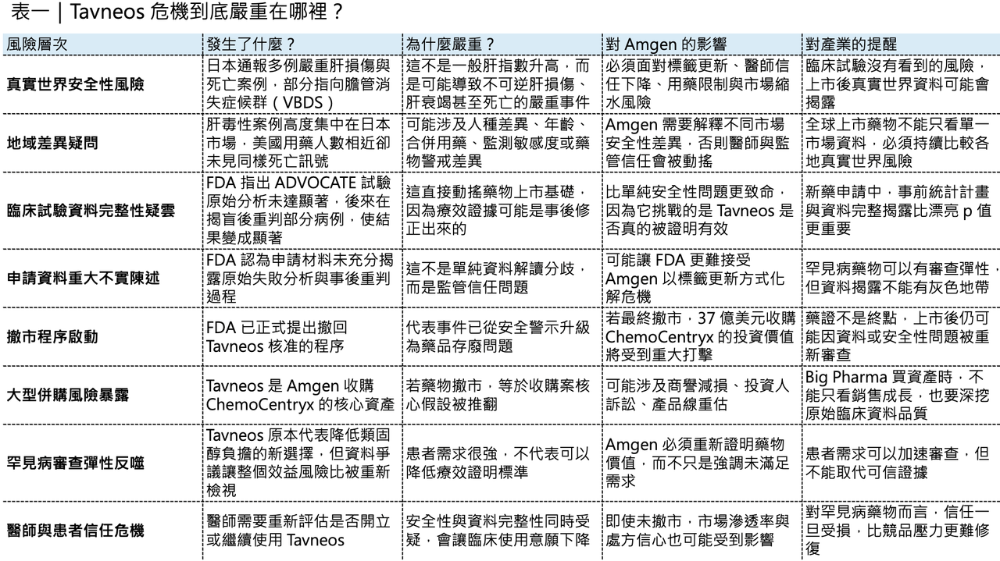
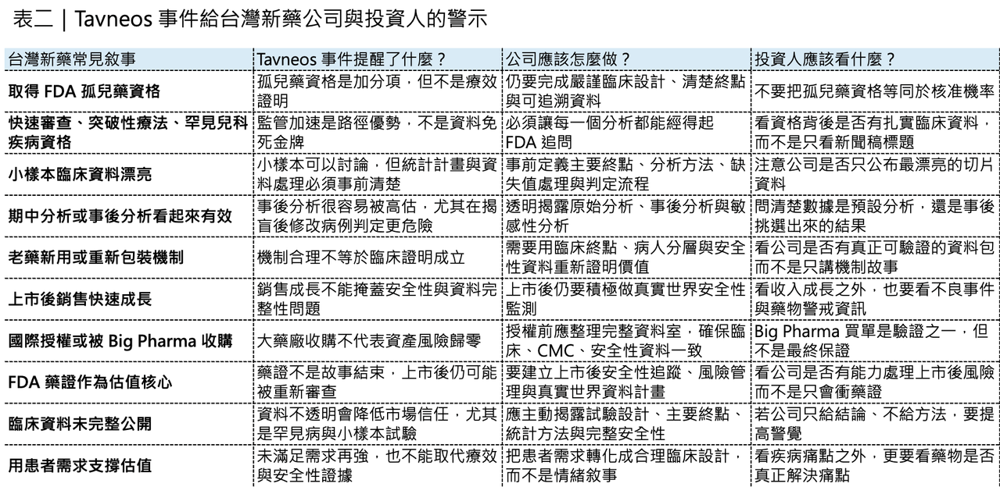

一款曾被寄予厚望的罕見病藥物，正在站上美國市場撤市邊緣。
分享這篇分析
把這篇文章轉給關注生技醫藥、公司研究或資本市場的朋友。
這款藥是 Tavneos（avacopan，阿伐可泮）。
它原本是補體系統藥物裡很受關注的產品，機制是阻斷補體 C5a 受體，用於治療成人嚴重活動性 ANCA 相關血管炎。ANCA 相關血管炎，全名是抗嗜中性白血球細胞質抗體相關血管炎，包括 granulomatosis with polyangiitis（GPA，肉芽腫性多血管炎）與 microscopic polyangiitis（MPA，顯微鏡下多血管炎）。
這類疾病罕見但凶險，可能侵犯腎臟、肺部、神經與其他器官。傳統治療往往需要使用大量類固醇，搭配 rituximab、cyclophosphamide 等免疫抑制療法。Tavneos 當年最吸引人的地方，就是它有機會減少類固醇使用，降低長期高劑量類固醇帶來的感染、骨質疏鬆、糖尿病、體重增加、心血管與代謝副作用。
但現在，這款藥物的故事出現巨大反轉。
2026 年 4 月 27 日，美國 FDA 藥品審查與研究中心（CDER）正式提出撤回 Tavneos 核准的程序。FDA 的理由非常嚴重：一方面，新的資訊讓 FDA 認為 Tavneos 缺乏充分療效證據；另一方面，原始申請資料中包含重大事實不實陳述。FDA 也指出，Tavneos 目前仍會留在市場上，直到申請人自行撤回，或 FDA 局長最終下令撤回核准為止。這不是一般的安全性標籤更新。這是一場同時牽涉真實世界肝毒性、臨床試驗資料完整性、罕見病監管彈性，以及大型藥廠併購風險的監管風暴。

01｜日本 20 例死亡通報，讓 Tavneos 的肝毒性問題被推到台前
Tavneos 的第一個危機，來自真實世界安全性。
2026 年 5 月，日本 Kissei Pharmaceutical 發布安全警示，建議醫師暫停為新患者開立 Tavneos。Reuters 引述 Kissei 的安全通知指出，自 2022 年 Tavneos 在日本上市以來，約有 8,503 名患者使用該藥，並通報約 20 例可能與嚴重肝功能障礙相關的死亡案例。其中最引人注意的，是一種罕見但嚴重的肝損傷型態：vanishing bile duct syndrome（VBDS，膽管消失症候群）。
所謂膽管消失症候群，是肝臟內小膽管逐漸受損、消失，導致膽汁排出異常。這不是一般肝指數輕微升高，而可能演變成不可逆肝損傷、肝衰竭，甚至死亡。
⚠️ FDA 早在 2026 年 3 月 31 日就發布安全警示，指出已確認全球 76 例與 Tavneos 存在合理因果關聯的藥物性肝損傷案例，其中包括 7 例膽管消失症候群與 8 例死亡。FDA 也提醒醫療人員，如果懷疑患者出現藥物性肝損傷，應停用 Tavneos。
更讓市場不安的是地域差異。
FDA 與媒體報導都指出，大多數肝損傷與膽管消失症候群案例來自日本。Amgen 則在對醫療人員的更新中表示，膽管消失症候群案例主要發生在美國以外、以日本為主，且多數患者為 65 歲以上；Amgen 同時強調，肝毒性是 Tavneos 已知風險，臨床試驗中曾觀察到嚴重肝損傷，美國核准標籤中也已包含肝毒性警語。
這裡真正的問題不是「日本是不是特例」。真正的問題是：為什麼使用人數相近的市場，安全性通報差異會如此巨大？
- 可能是東亞高齡族群有不同風險。
- 可能是日本藥物警戒系統更敏感。
- 可能是患者共病、合併用藥、疾病嚴重程度不同。
- 也可能是不同市場對肝毒性與膽管消失症候群的辨識率不同。
但在監管眼中，這些都不是可以輕描淡寫帶過的問題。尤其當一款藥物原本療效證據就受到質疑時，安全性風險會被重新放大。

02｜真正致命的，不只是肝毒性，而是 FDA 對資料完整性的指控
如果只有肝毒性，Tavneos 仍可能透過標籤更新、風險管理、限制使用族群、加強肝功能監測來處理。
但 FDA 這次更嚴重的指控，是臨床試驗資料完整性。
Tavneos 的核准基礎主要來自一項 Phase 3 試驗：ADVOCATE。
這項研究比較 Tavneos 與類固醇方案，目標是證明 Tavneos 能在 ANCA 相關血管炎中達到疾病緩解與持續緩解，同時降低類固醇暴露。
問題出在揭盲後的資料處理。
FDA 的撤市提案指出，ADVOCATE 試驗資料庫在 2019 年 11 月 5 日鎖定後，原始統計分析結果並未達到統計顯著性，雙側 p 值為 0.1025。
換句話說，依照原先分析，Tavneos 並沒有在主要療效終點上證明優於對照組。但後來，申請方在已經揭盲、已經看到結果後，挑選 9 名受試者進行重新判定，其中包括 5 名 Tavneos 組患者。FDA 文件指出，這 5 名 Tavneos 組患者的結局被重新判定後，資料被改成支持「持續緩解」，最後提交給 FDA 的分析 p 值變成 0.0132，看起來達到統計顯著。這就是整件事最嚴重的地方。在臨床試驗裡，最重要的原則之一，是先設定規則，再看結果。如果看到不利結果後，再回頭改資料、重判病例、重跑分析，就會大幅增加「假陽性」風險。簡單說，就是一個本來沒有證明有效的藥，可能因為反覆重算、重判、重切資料，最後看起來像有效。
FDA 對此用語非常重。FDA 表示，申請方沒有向 FDA 披露原始失敗分析，也沒有披露重新判定是在揭盲後、且知道這些重新判定會把結果從不顯著改成顯著的情況下進行。FDA 進一步指出，這些行為使 ADVOCATE 試驗結果無法解讀，不能再被用來支持藥物療效。這已經不是統計細節之爭。這是藥品核准體系最核心的問題：如果一款藥的主要療效證據，是建立在揭盲後重新處理資料的結果上，那它到底有沒有被真正證明有效？
03｜Tavneos 當年本來就是一個充滿爭議的核准
回頭看，Tavneos 的核准從一開始就不是毫無爭議。
FDA 文件指出，Tavneos 於 2021 年 10 月 7 日獲准，用於成人嚴重活動性 ANCA 相關血管炎，需與標準療法合併使用，包括類固醇。FDA 文件也提到，CDER 審查團隊當年在 NDA 審查期間就曾發現多項可能影響核准的問題。也就是說，這款藥並不是在非常乾淨、無爭議的資料基礎上獲准。它本來就是建立在一個罕見病、高未滿足需求、希望減少類固醇使用、患者需求強烈的監管情境裡。
這一點非常值得理解，罕見病藥物審查，常常不是「完美資料」與「不完美資料」之間的選擇，而是在不完整證據下，判斷是否仍有足夠臨床價值。
- 患者真的需要新藥。
- 醫師真的不想讓病人長期吃大量類固醇。
- Tavneos 的機制也確實有合理性。
但監管彈性不是無底線，如果資料只是「不完美」，FDA 可能願意討論，但如果資料完整性被動搖，性質就完全不同。因為藥品核准不是只看患者需求，也要維持整個審查制度的可信度。FDA 在撤市提案中直接指出，如果在這種情況下仍讓藥物留在市場，等於鼓勵申請人在資料被揭露有問題後，還可以要求重新分析資料、再找一次陽性結果。這句話非常重。它代表 FDA 這次不是只在處理 Tavneos，而是在維護整個藥品審查制度的底線。
04｜Amgen 為什麼不能輕易放棄？
面對 FDA 的撤市提案，Amgen 沒有選擇自願撤市。
這一點並不意外。
Amgen 在 2022 年以約 37 億美元企業價值收購 ChemoCentryx，把 Tavneos 納入自己的發炎與腎臟疾病產品組合。當時 Amgen 明確表示，ChemoCentryx 能強化其發炎與腎臟病學布局，而 Tavneos 是治療嚴重活動性 ANCA 相關血管炎的第一類產品。
對 Amgen 來說，Tavneos 不只是單一產品，它是一筆大型併購的核心資產。2025 年，Tavneos 全球銷售額達 4.59 億美元，仍是 Amgen 成長較快的產品之一。FDA 提出撤市後，Tavneos 仍可留在市場，直到 Amgen 自行撤回或 FDA 最終決定撤回核准。如果 Tavneos 最終被撤市，Amgen 面臨的不只是收入損失。
- 37 億美元收購案的投資失敗壓力。
- 潛在商譽減損。
- 投資人訴訟風險。
- 稀有疾病與腎臟免疫產品線受挫。
- 對內部併購審查與盡職調查能力的質疑。
因此，Amgen 的立場非常明確：不同意 FDA 的評估。Amgen 在公開更新中表示，公司不認為底層患者資料存在問題，仍相信 Tavneos 對嚴重活動性 ANCA 相關血管炎患者具有有效治療價值，並具有良好的效益風險比。Amgen 也表示，自 2021 年 FDA 核准以來，美國已有超過 8,000 名患者使用 Tavneos，並正與 FDA 持續討論下一步。這場博弈因此變得很清楚。
- FDA 的核心立場是：資料被污染後，療效證據不能再被信任。
- Amgen 的核心立場是：即使有程序爭議，臨床資料與真實世界經驗仍支持 Tavneos 的效益風險比。
這不是一般藥品安全性爭議，這是監管信任與企業資產價值之間的正面衝突。
05｜標籤更新救得了 Tavneos 嗎？
Amgen 的策略之一，是主動處理安全性標籤。
Amgen 表示，公司在 2024 年就已主動向 FDA 提交標籤更新建議，希望把膽管消失症候群加入 Tavneos 標籤；在 FDA 發布肝損傷安全警示後，Amgen 也提醒醫療人員參考肝功能監測與停藥建議。
- 從一般藥品風險管理角度，這是合理的。
如果一款藥物存在已知風險，但效益明確，監管機構通常可以透過黑框警語、用藥限制、風險評估與管控計畫、加強監測、病人篩選等方式管理。但 Tavneos 的問題在於，FDA 現在質疑的不只是風險。
它質疑的是效益，如果一款藥的療效證據仍然成立，那可以討論如何管理肝毒性。但如果 FDA 認為療效證據本身無法解讀，那就很難用標籤更新解決全部問題。
- 這就是 Tavneos 目前最危險的地方。
對 Amgen 來說，加入膽管消失症候群警語或許能回應一部分安全性疑慮，但無法完全化解 FDA 對資料完整性的指控。真正決定 Tavneos 命運的，不只是 Amgen 能不能把安全性標籤補得更完整，而是能不能讓 FDA 接受：即使 ADVOCATE 有程序問題，整體資料仍足以證明藥物有效。
這會非常困難。因為 FDA 文件已經明確說，原始分析未達統計顯著，事後重判後的 p 值無法解讀。
06｜罕見病藥物的兩難：患者需求不能變成資料鬆綁的藉口
Tavneos 危機之所以重要，是因為它折射出罕見病藥物開發的結構性矛盾。
罕見病患者人數少，疾病嚴重，未滿足需求強，臨床試驗很難做得像常見病那麼大、那麼完整。
因此，監管機構常常願意給予一定彈性。
- 小樣本可以討論。
- 替代終點可以討論。
- 單臂試驗有時可以討論。
- 外部對照有時也可以討論。
但這些彈性的前提，是資料必須誠實、完整、可追溯。
- 監管可以接受不完美。
但不能接受資料選擇性揭露。
- 可以接受小樣本。
但不能接受看到結果後修改規則。
- 可以接受罕見病裡更高的不確定性。
但不能接受申請資料中存在重大事實不實陳述。
這才是 Tavneos 事件最深層的教訓。
患者需求不容否認。Tavneos 對於 ANCA 相關血管炎患者的價值主張也很清楚：減少類固醇使用，降低長期類固醇負擔。這確實切中臨床痛點。但藥物開發不能因為臨床需求強，就放鬆資料完整性的底線。因為一旦這條線被突破，受害者最後仍然是患者。患者需要的是有效且安全的藥，不是被事後分析包裝出來的希望。

結語｜Tavneos 的真正教訓：罕見病可以有彈性，但資料不能有灰色地帶
Tavneos 的命運還沒有最終定案。
Amgen 仍可尋求聽證與辯護，FDA 也尚未做出最終撤回決定。對正在使用 Tavneos 的患者來說，也不應自行停藥，而應與醫師討論效益、風險與替代治療選擇。FDA 目前也建議醫療人員與患者討論 Tavneos 與其他可用治療，在最終決定前共同評估是否使用或繼續使用。但不管最終結果如何，Tavneos 已經成為一個非常重要的案例。它提醒整個產業：
- 罕見病藥物可以有監管彈性，但資料完整性不能有彈性。
- 患者需求可以推動審查加速，但不能取代療效證明。
- 真實世界資料可以補強藥物價值，但也可能揭露臨床試驗沒有看見的風險。
- 併購可以快速買到產品，但也可能把早期資料瑕疵與上市後安全性風險一起買回家。
對 Amgen 來說，Tavneos 是一筆 37 億美元併購案的核心資產，對 FDA 來說，它是維護藥品審查制度可信度的案例，對患者來說，它曾代表降低類固醇負擔的新希望，對整個新藥產業來說，它則是一個更冷峻的提醒：一個藥物的價值，不能只靠機制、需求與市場來支撐。
最後仍然要回到最根本的問題。
- 資料是不是真的？
- 療效是不是被證明？
- 風險是不是被誠實揭露？
- 患者能不能因此得到真正可相信的治療？
Tavneos 危機讓市場看到，當這些問題沒有被回答清楚，再大的藥廠、再貴的併購、再強的罕見病需求，都可能在監管面前重新歸零。
參考資料：
[0]: 各公司官網＆公開資料
[1]:
CDER proposes to withdraw approval of TAVNEOS | FDA
CDER proposes to withdraw approval of TAVNEOS
www.fda.gov
"CDER proposes to withdraw approval of TAVNEOS | FDA"
[2]:
reuters.com
https://www.reuters.com/business/healthcare-pharmaceuticals/amgens-rare-disease-drug-linked-deaths-liver-injuries-japan-wsj-reports-2026-05-15/
www.reuters.com
[3]:
reuters.com
https://www.reuters.com/business/healthcare-pharmaceuticals/us-fda-warns-liver-injury-cases-tied-amgens-rare-disease-drug-2026-03-31/
www.reuters.com
[4]:
An Important Update Regarding TAVNEOS® (avacopan) | Amgen
An Important Update Regarding TAVNEOS® (avacopan)
www.amgen.com
"An Important Update Regarding TAVNEOS® (avacopan) | Amgen"
[5]:
www.fda.gov
https://www.fda.gov/media/192160/download?attachment=
www.fda.gov
"Letter NOOH Taveneos (avacopan)"
引用本文
若在簡報、報告或社群討論引用，建議附上 Drugnews 原文連結。
Drugnews 編輯部，〈⚠️ Tavneos 危機：20 例死亡通報、資料完整性疑雲，Amgen 罕病明星藥站上撤市邊緣〉，Drugnews｜藥時事，2026/05/31，https://drugnews.com.tw/articles/2026-05-31-tavneos-safety-data-integrity-crisis.html
社群原文
讀完這篇，下一步看
這三篇會優先依主題、標籤與產業脈絡推薦，幫你把同一個問題讀得更完整。

臨床試驗作假，FDA 撤市風暴！
FDA 對 Tavneos 提出撤市程序，核心不是單純療效不足，而是 ADVOCATE 試驗資料完整性與事後重判問題。

減肥成王：GLP-1 正在把全球生技資本重新洗牌
GLP-1 不只是減重藥題材，而是重新配置全球藥廠研發預算、產能投資、BD 談判與生技估值規則的核心變數。

一篇文章講通現在的“禮來”併購邏輯
💡 四個月，五筆交易，若把交易上限全部加總，Eli Lilly 在 2026 年前四個月已經丟出超過 187 億美元的併購火力：1 月的 Ventyx Biosciences、2 月的 Orna Therapeutics、3 月的 Centessa Pharmaceuticals、4 月的 Cro…